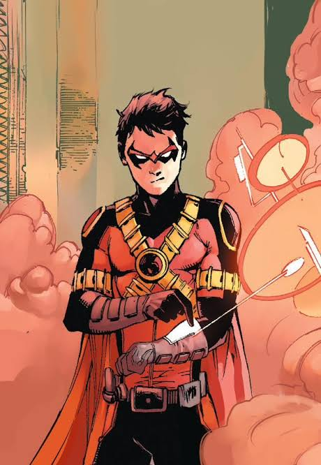

Tim Drake - Red Robin
Tim Drake fue el tercer Robin, reconocido por su gran inteligencia y capacidad deductiva. Descubrió la identidad de Batman y Nightwing por sí mismo.
Tras su tiempo como Robin, asumió la identidad de Red Robin, continuando el legado con un enfoque más estratégico y tecnológico.
